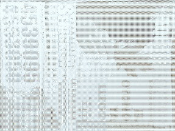
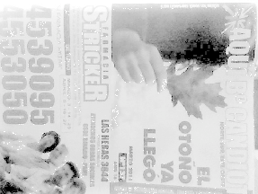
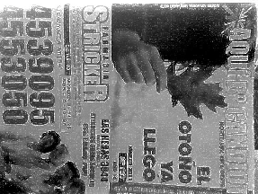

Siguiente: Experimento 2 Subir: Experimentos Anterior: Experimentos Índice General
|
[][Imagen patrón con condición .] |
Los resultados de las técnicas aplicadas con los parámetros que se mencionarán a continuación, pueden observarse en la Fig. 4.3, Fig. 4.4 y Fig. 4.5 para la condiciones de iluminación  ,
,  y , respectivamente. Por cuestiones de brevedad, haremos referencia a las imágenes de la Fig. 4.3 para la condición
y , respectivamente. Por cuestiones de brevedad, haremos referencia a las imágenes de la Fig. 4.3 para la condición  , pero una interpretación similar se puede realizar para las demás condiciones.
, pero una interpretación similar se puede realizar para las demás condiciones.
La imagen patrón que se utilizó en la condición  se encuentra ilustrada en la Fig. 4.3a y es sobre ésta que se aplican las diferentes técnicas mencionadas. Para la transformación logarÃtmica, el valor se estableció en y el resultado de aplicar esta transformación, se puede observar en la Fig. 4.3b. El resultado la ecualización puede apreciarse en la Fig. 4.3c, mientras que en la Fig. 4.3d, se puede visualizar el resultado de un filtrado pasa altos con el kernel:
se encuentra ilustrada en la Fig. 4.3a y es sobre ésta que se aplican las diferentes técnicas mencionadas. Para la transformación logarÃtmica, el valor se estableció en y el resultado de aplicar esta transformación, se puede observar en la Fig. 4.3b. El resultado la ecualización puede apreciarse en la Fig. 4.3c, mientras que en la Fig. 4.3d, se puede visualizar el resultado de un filtrado pasa altos con el kernel:
En lo que respecta al filtrado de alta potencia, se estableció el valor para la expresión (2.8) y se utilizó un kernel de un filtro pasa altos de la forma:
Finalmente, se propuso una alternativa mixta para aumentar el contraste de la imagen realzando a su vez los detalles. Para ello, se aplicó la ecualización del histograma y posteriormente, sobre la imagen resultante, el filtrado de alta potencia con los parámetros mencionados anteriormente (Fig. 4.3f).
|
[][Ecualización] [][Filtrado pasa altos] [][Filtrado de alta potencia] [][Ecualización + filtrado de alta potencia] |
|
[][Ecualización] [][Filtrado pasa altos] [][Filtrado de alta potencia] [][Ecualización + filtrado de alta potencia] |
![\includegraphics[width=2.5in]{../exp1/train_oscura_BL/train_oscura453}](img361.png)
[][Ecualización] [][Filtrado pasa altos] [][Filtrado de alta potencia] [][Ecualización + filtrado de alta potencia] |
Como es de esperar, al realizar un análisis visual subjetivo de los resultados obtenidos al aplicar las diversas técnicas, se puede observar que para las tres condiciones de iluminación, el filtrado pasa altos y el filtro de alta potencia realzan los detalles, mientras que la ecualización mejora el contraste. En el caso particular de la condición , se puede decir que la ecualización y la combinación de ecualización y filtrado de alta potencia son las que logran los mejores resultados respecto de las demás técnicas, esto como consecuencia de la maximización del contraste en la imagen resultante de la operación de ecualización.
Los resultados del tiempo de procesamiento (expresado en milisegundos) y la cantidad de puntos claves detectados para cada técnica en las tres condiciones de iluminación, se presentan resumidos en el Cuadro 4.1. Para la detección de puntos claves en la imagen, se utilizó un umbral hessiano que se estableció empÃricamente en y fue el mismo para las tres condiciones de iluminación.
| t [ms] | ||||
| Sin Procesamiento | 0.00 | 958 | 1297 | 154 |
| Logaritmo | 7.15 | 515 | 622 | 493 |
| Ecualización | 0.70 | 1546 | 1472 | 1233 |
| F. Pasa Altos | 1.26 | 1633 | 2006 | 269 |
| F. Alta Potencia | 3.10 | 1952 | 2216 | 353 |
| Ec.+F. Alta Potencia | 4.31 | 2704 | 2443 | 2002 |
En el Cuadro 4.1, se puede observar que el tiempo de procesamiento consumido para la aplicación del logaritmo es superior a los demás valores, lo cual puede resultar incomprensible por tratarse de una operación sencilla. Se cree que el tiempo de cálculo se ve afectado por la forma en que fue implementado en el código de la aplicación: por un lado se debe tener en cuenta que la operación de logaritmo de OpenCV implementa el logaritmo neperiano y no el logaritmo en base 10, por lo cual se hizo necesario realizar varias operaciones para obtener el resultado correcto; por otro lado, existen casos en los que se describe que la instalación y compilación de OpenCV con soporte para Intel IPP5.1 podrÃa ser una solución al inconveniente, lográndose tiempos de cálculo más acotados. Sin embargo y como la cantidad de puntos caracterÃsticos detectados es menor que cuando no se aplica procesamiento alguno (exceptuando la imagen en condiciones ), no se le dio mayor importancia.
Las técnicas que involucran una operación de convolución (filtro pasa altos, filtro de alta potencia) obtienen tiempos de procesamiento mayores que la ecualización de la imagen. Además y como es de esperar, la combinación de ecualización y filtrado de alta potencia resulta en un mayor tiempo de procesamiento que los anteriormente mencionados.
Si observamos en el Cuadro 4.1 la cantidad de caracterÃsticas detectadas para cada técnica, se aprecia que la combinación de ecualización + filtro de alta potencia es la que presenta mayor cantidad de detecciones de puntos. Ésto es producto de una iluminación más uniforme lograda con la ecualización y del realce de los detalles como resultado de la aplicación del filtro de alta potencia.
Para el filtro pasa altos y el de alta potencia el incremento en la cantidad de puntos detectados se debe a que dichos filtros realzan las altas frecuencias y discontinuidades. También se puede notar que en el caso del filtrado de alta potencia, se detectan más caracterÃsticas que con el filtrado pasa altos y ésto puede deberse a que el primero no afecta las bajas frecuencias. Mediante la ecualización, se obtienen más puntos detectados que cuando no se procesa la imagen y si bien no supera a los otros procesamientos, ésta puede considerarse la más útil si la prioridad es el tiempo.
Del análisis realizado, se observa que todos los procesamientos aplicados incrementan la cantidad de puntos detectados, exceptuando el logaritmo (sólo incrementa la cantidad de puntos en la imagen en condiciones ). Se cree que la obtención de menor cantidad de puntos detectados como resultado de aplicar la transformación logarÃtmica en condiciones  (Fig. 4.3b) y
(Fig. 4.3b) y  (Fig. 4.4b), se ve justificada en que las imágenes resultantes poseen intensidades más homogéneas obteniéndose menor distinción en los detalles. Para la condición , la cantidad de puntos detectados se incrementa respecto al de la imagen sin procesamiento, como resultado de un aumento de los detalles (obsérvese el borde superior de la mano de la imagen en la Fig 4.5b comparándose con la imagen de la Fig. 4.5a).
(Fig. 4.4b), se ve justificada en que las imágenes resultantes poseen intensidades más homogéneas obteniéndose menor distinción en los detalles. Para la condición , la cantidad de puntos detectados se incrementa respecto al de la imagen sin procesamiento, como resultado de un aumento de los detalles (obsérvese el borde superior de la mano de la imagen en la Fig 4.5b comparándose con la imagen de la Fig. 4.5a).
En el gráfico de la Fig. 4.6 se presenta una comparación de la cantidad de puntos detectados para las condiciones  ,
,  y establecidas. Claramente se advierte que cuando se realiza la combinación de ecualización y filtrado de alta potencia en el caso de un ambiente en condición
y establecidas. Claramente se advierte que cuando se realiza la combinación de ecualización y filtrado de alta potencia en el caso de un ambiente en condición  , la cantidad de puntos detectados casi llega a triplicarse, respecto de cuando no se aplica técnica alguna. En tanto que en una condición
, la cantidad de puntos detectados casi llega a triplicarse, respecto de cuando no se aplica técnica alguna. En tanto que en una condición  , la detección se duplica. Si analizamos lo que pasa en la condición de iluminación , la cantidad de caracterÃsticas posee valores bajos respecto de las otras condiciones de iluminación, ésta diferencia se evidencia aún más cuando no se aplica la ecualización, ya que los filtros pasa altos y de alta potencia actúan sobre una imagen oscura sobre la que realzan los detalles, pero la diferencia de grises entre pÃxeles vecinos resulta insuficiente para una correcta detección.
, la detección se duplica. Si analizamos lo que pasa en la condición de iluminación , la cantidad de caracterÃsticas posee valores bajos respecto de las otras condiciones de iluminación, ésta diferencia se evidencia aún más cuando no se aplica la ecualización, ya que los filtros pasa altos y de alta potencia actúan sobre una imagen oscura sobre la que realzan los detalles, pero la diferencia de grises entre pÃxeles vecinos resulta insuficiente para una correcta detección.
Hasta aquà se han planteado tres condiciones ambientales diferentes. Además de éstas, se han realizado algunas pruebas adicionales tratando de observar el comportamiento del método en condiciones de iluminación intermedias (entre  ,
,  y ). Las mismas, no serán expuestas en este trabajo en detalle, sin embargo se realizará una reseña de las conclusiones obtenidas.
y ). Las mismas, no serán expuestas en este trabajo en detalle, sin embargo se realizará una reseña de las conclusiones obtenidas.
Si bien la obtención de una mayor cantidad de caracterÃsticas no presenta una garantÃa de lograr una mejor detección del objeto buscado (pueden ser caracterÃsticas espurias), en la práctica y sobre todo en situaciones de iluminación baja o en una condición intermedia entre y  , donde la cantidad de caracterÃsticas resulta insuficiente para lograr la detección del objeto, se notó que al aplicar ecualización o ecualización + filtro de alta potencia, se pudo detectar el objeto que previamente y sin procesamiento, no resultaba detectable. A pesar de obtener una correcta detección, se presentaron casos en que la detección fue ``intermitente''. Se varió el umbral hessiano de forma de discriminar menos puntos caracterÃsticos, pero no se obtuvieron resultados apreciablemente superiores.
, donde la cantidad de caracterÃsticas resulta insuficiente para lograr la detección del objeto, se notó que al aplicar ecualización o ecualización + filtro de alta potencia, se pudo detectar el objeto que previamente y sin procesamiento, no resultaba detectable. A pesar de obtener una correcta detección, se presentaron casos en que la detección fue ``intermitente''. Se varió el umbral hessiano de forma de discriminar menos puntos caracterÃsticos, pero no se obtuvieron resultados apreciablemente superiores.
En lo que respecta a las condiciones  y
y  , los resultados obtenidos sin la aplicación de un procesamiento de mejora del realce de iluminación y detalles, resultaron satisfactorios en las mayorÃas de las pruebas. Si bien la aplicación de las técnicas de ecualización, filtrado pasa altos, filtrado de alta potencia y la combinación de ecualización y filtrado de alta potencia mejoran la detección incrementando las caracterÃsticas halladas y la robustez general del método, esto repercute negativamente en el tiempo de procesamiento, sobre todo en la aplicación de la ecualización y la combinación con el filtro de alta potencia. Sin embargo, la aplicación de estas técnicas cuando se está en presencia de un ambiente de iluminación intermedio entre y
, los resultados obtenidos sin la aplicación de un procesamiento de mejora del realce de iluminación y detalles, resultaron satisfactorios en las mayorÃas de las pruebas. Si bien la aplicación de las técnicas de ecualización, filtrado pasa altos, filtrado de alta potencia y la combinación de ecualización y filtrado de alta potencia mejoran la detección incrementando las caracterÃsticas halladas y la robustez general del método, esto repercute negativamente en el tiempo de procesamiento, sobre todo en la aplicación de la ecualización y la combinación con el filtro de alta potencia. Sin embargo, la aplicación de estas técnicas cuando se está en presencia de un ambiente de iluminación intermedio entre y  , contribuyen a incrementar la calidad en la detección. En la práctica las decisiones dependerán de lo que se quiera priorizar (calidad en la detección o velocidad de ejecución) y del ambiente en que se use el método. En base a ello, se puede tomar la decisión de la técnica a utilizar, como asà también del umbral hessiano que permita la mejor relación entre velocidad y calidad de detección.
, contribuyen a incrementar la calidad en la detección. En la práctica las decisiones dependerán de lo que se quiera priorizar (calidad en la detección o velocidad de ejecución) y del ambiente en que se use el método. En base a ello, se puede tomar la decisión de la técnica a utilizar, como asà también del umbral hessiano que permita la mejor relación entre velocidad y calidad de detección.